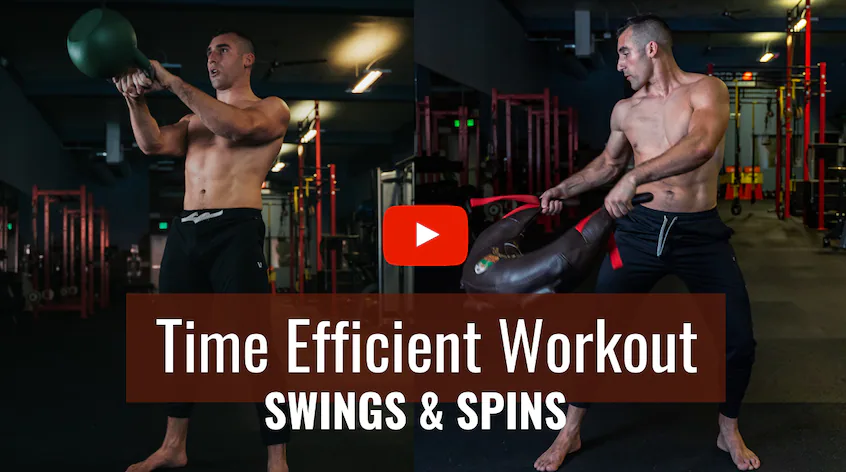

B255 · The MOST Time Efficient Workout in the World...
Hi {first_name},
I'm out here in beautiful Eden, Utah for a meeting with some of the best fitness business minds lead by my good friend Mike Bledsoe and his organization, The Strong Coach.
It’s been so nice to re-connect with these friends and get some good movement in together!
For today’s YouTube video I asked Ben Walker who is here at the retreat to join me as I share with you a fantastic time efficient workout utilizing two of the best pieces of home workout equipment - the Kettlebell and Suples Bulgarian Bag.
With these two tools, I've selected my favorite total body dynamic exercises, the Kettlebell Swing, and Suples Spin. You will train your lower back, glutes, hamstrings, core, shoulders, grip, and more.
 In this workout, depending on your fitness and skill level, you can choose the appropriate weight, repetition, and load that best suits where you are right now.
Click here to access the workout
Here are a few suggested guidelines:
Lower/Medium Conditioning Level
Medium Conditioning Level
High Conditioning Level
While this supersetted workout can be done in a very short amount of time, I highly suggest warming up for 5-15 minutes prior and spending at least 5-10 minutes post-training to cool down and stretch.
Click here to access the workout
You should be "in-and-out the door" and completed with everything between 20-35 minutes (depending on how long you spend in each segment).
I hope you love incorporating this workout into your training for an incredible time effective, and most importantly, FUN experience with it.
All the best,
P.S. If you are interested in becoming among the best kettlebell practitioners in the world, I have a program for you. My Kettlebell Lifestyle Masters Program, will take 6-8 people through a carefully designed small group experience with myself and Dr. Drew Vercellino. The last day to apply is Sunday so click here and apply now.
|